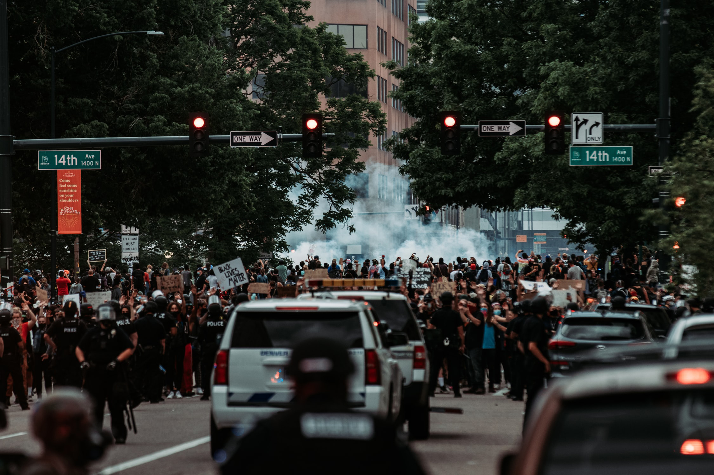

Black Lives Matter Movement


We have had enough. There are so many black people getting killed by racism. After all these years what our ancestors been through, we are still going through; the pain of racism brutality. I want to know what do we have to do just to be accepted in the eyes of white people. NOTHING! All we want is equality. We shouldn't be fighting the government, the police or the justice system because of the colour of our skin. God made us this way, in other words we were born this way. At the end of the day, we are all human no matter what race we are.
I watch the American News, there has always a report of a black man or woman getting killed or harrest by the police. Not one time I watch the news peacefully without racism involved. If you could go back in time for one second, and look at Martin Luther King Jr., Malcome X, Rosa Parks, John Lewis and many more. Tell me who they all fought for? Equality right? So why is it leading up to this day we as black people are still fighting?
Are you telling me their tears and voices are not enough for every racism persons an this Earth to see or hear? They had to stand up for their rights, create a speech, elect their first African American president, create a movement, just for the racists to finally see what hs been going on within the community or country. Yet some racist people still have that deep racism boiling inside of them. This is not the 1700's or the 1800's where the whites just took away their freedom and put them on their plantation to suffer, THIS IS NOT THE 21ST CENTURY PEOPLE! African Americans deserve their freedom.
When Barack Obama got elected as the first African American President and Michelle Obama was the first African American First Lady of America, I thought African Americans were at the promise land what their ancestors dreamed about. But apparently I was wrong. In May of 2020, George Floyd was an African American man who was killed by four police officers during an arrest for a passed of conunterfeit $20 bill. Breonna Taylor a 26 year old African American woman was shot by 2 police officers in her own Louisville, Kentucky, apartment on March of 2020. There are so many more African Americans who have been killed by police and brutal racist. When I saw the news report of George Floyd and Breonna Taylor, I couldn't say a word. It was too brutal for me to look at their family and friends. We had been through enough.
Are you not getting this? Look at every black people around the world. You can see the love, pride, diligence, and passion among us black people. When we see one another we bust into a converstation, make jokes at one another, and have some fun. We come together as a family. Just because we have darker skin doesn't mean we want to harm you. We just want to be accepted. We are tired of going through racism. It all comes down to this do racist people ever stop being racist?